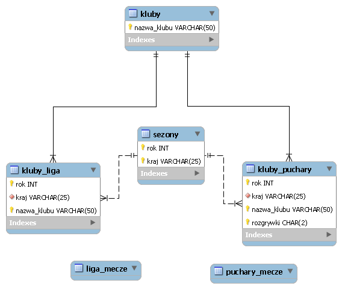
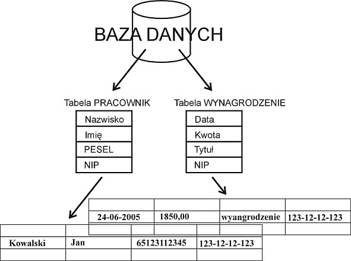

Relacyjna baza danych
to rodzaj bazy danych,
który pozwala przechowywać powiązane ze sobą elementy danych
i zapewnia do nich dostęp. Relacyjne bazy danych są oparte na
modelu relacyjnym — jest to prosty i intuicyjny sposób
przedstawiania danych w tabelach. W relacyjnej bazie danych
każdy wiersz tabeli jest rekordem z unikatowym identyfikatorem
nazywanym kluczem. Kolumny tabeli zawierają atrybuty danych, a
każdy rekord zawiera zwykle wartość dla każdego atrybutu,
co ułatwia ustalenie relacji między poszczególnymi
elementami rekordu.

Przykład relacyjnej bazy danych
Oto prosty przykład dwóch tabel, których mała
firma może używać do przetwarzania zamówień na swoje produkty.
Pierwsza tabela służy do przechowywania informacji na temat
klientów. Jej każdy rekord zawiera nazwę, adres, informacje
wysyłkowe i rozliczeniowe, numer telefonu oraz inne dane
kontaktowe klienta. Każdy fragment informacji (każdy atrybut)
znajduje się w oddzielnej kolumnie, a baza danych przypisuje
każdemu wierszowi unikatowy identyfikator (klucz). W drugiej
tabeli — służącej do przechowywania zamówień klientów — każdy
rekord zawiera identyfikator klienta, który złożył zamówienie,
zamówiony produkt, ilość, wybrany rozmiar i kolor itd., ale
nie zawiera imienia i nazwiska ani danych kontaktowych
klienta.

Te dwie tabele mają tylko jedną wspólną cechę:
kolumnę identyfikatora (klucz). Dzięki tej wspólnej
kolumnie relacyjna baza danych może utworzyć relację
między dwiema omawianymi tabelami. Wówczas, kiedy
aplikacja przetwarzająca zamówienia firmy przesyła
zamówienie do bazy danych, baza danych może przejść
do tabeli zamówień klienta, pobrać poprawne informacje
o zamówieniu produktu i użyć identyfikatora klienta z
tej tabeli, aby wyszukać informacje rozliczeniowe i
wysyłkowe klienta w tabeli informacji o kliencie.
Magazyn może następnie pobrać właściwy produkt,
klient może otrzymać zamówienie w terminie, a
firma może otrzymać zapłatę.
Jak są zorganizowane relacyjne bazy danych
Model relacyjny oznacza, że logiczne struktury danych —
tabele danych, widoki i indeksy — są oddzielone od
fizycznych struktur pamięci. Dzięki temu administratorzy
baz danych mogą zarządzać fizycznym przechowywaniem danych
bez wpływu na dostęp do tych danych jako struktury logicznej.
Na przykład zmiana nazwy pliku bazy danych nie powoduje
zmiany nazw przechowywanych w nim tabel.
Rozróżnienie między strukturą logiczną a fizyczną dotyczy
również operacji na bazach danych, które są wyraźnie
zdefiniowanymi działaniami umożliwiającymi aplikacjom
manipulowanie danymi i strukturami bazy danych.
Operacje logiczne umożliwiają aplikacji określenie
potrzebnej zawartości, a operacje fizyczne ustalają,
w jaki sposób należy uzyskać dostęp do danych,
a następnie wykonują to zadanie.
Aby zapewnić zawsze maksymalną dokładność i
dostępność danych, relacyjne bazy danych przestrzegają
określonych reguł integralności. Reguła integralności
może na przykład określać, że w tabeli nie są dozwolone
duplikaty wierszy, eliminując w ten sposób możliwość
wprowadzenia do bazy danych błędnych informacji.